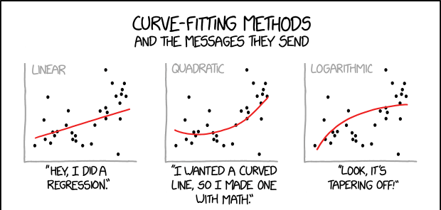
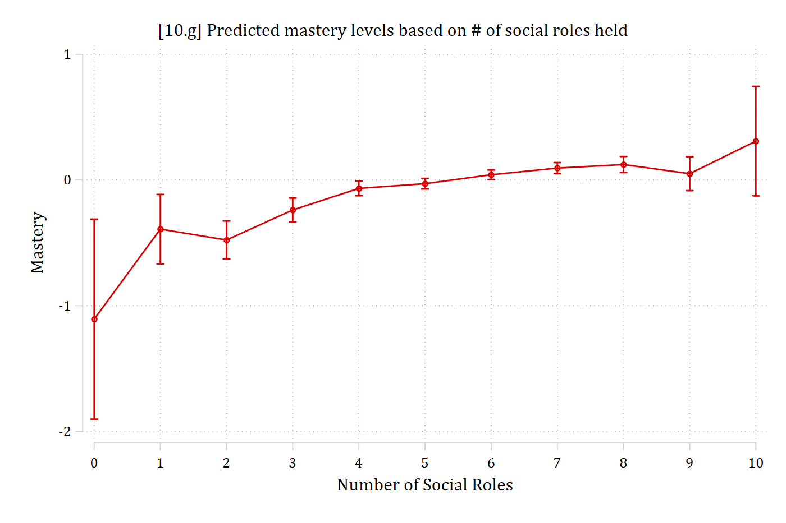
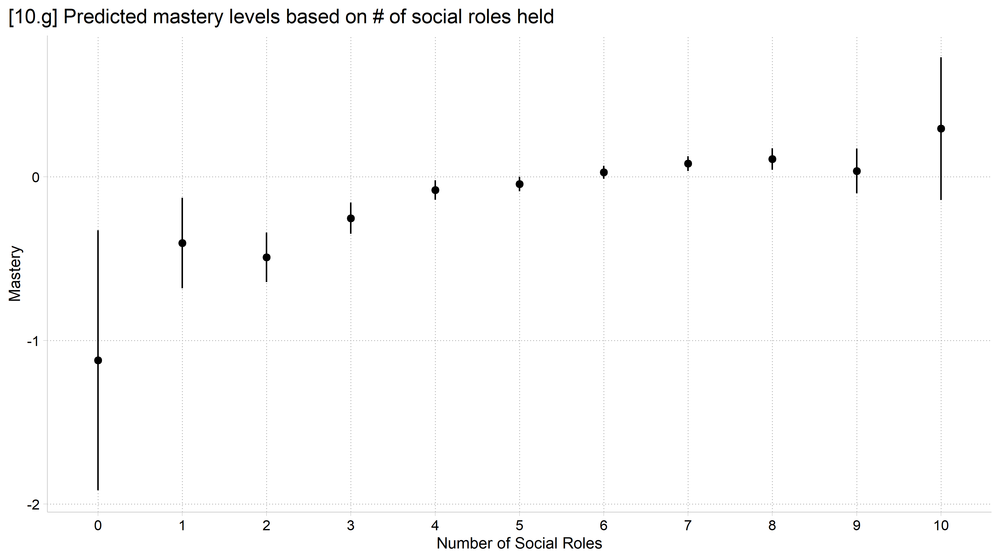
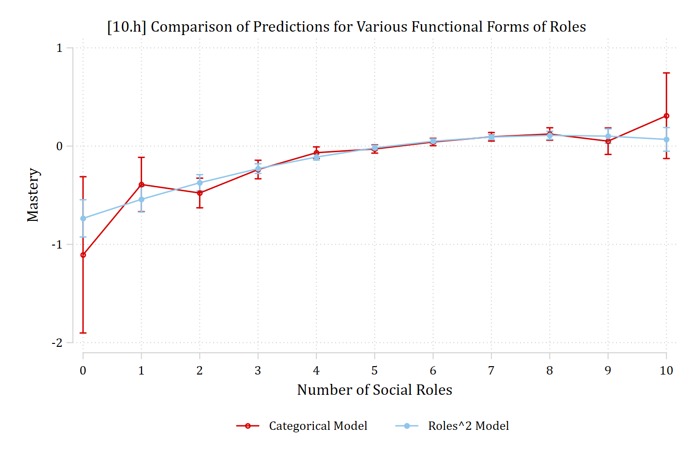
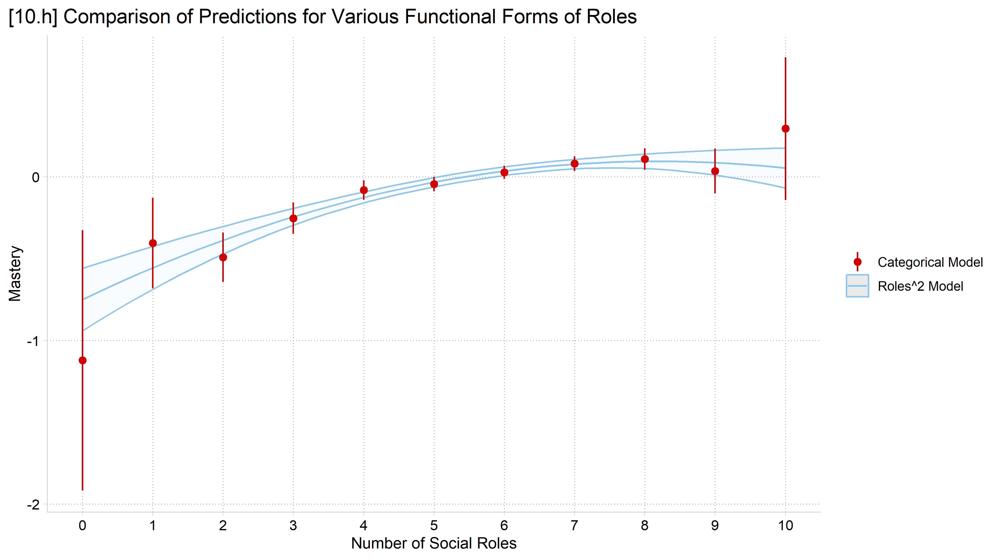
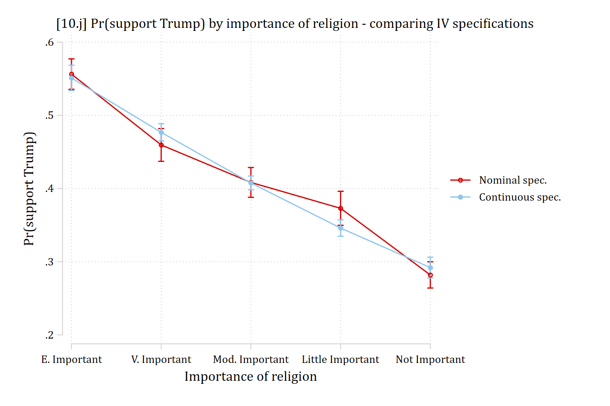
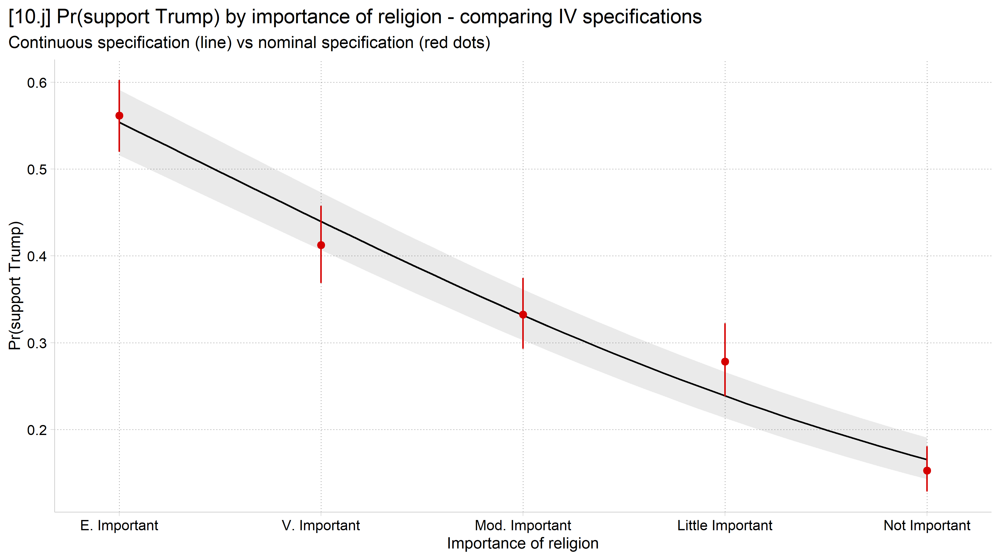
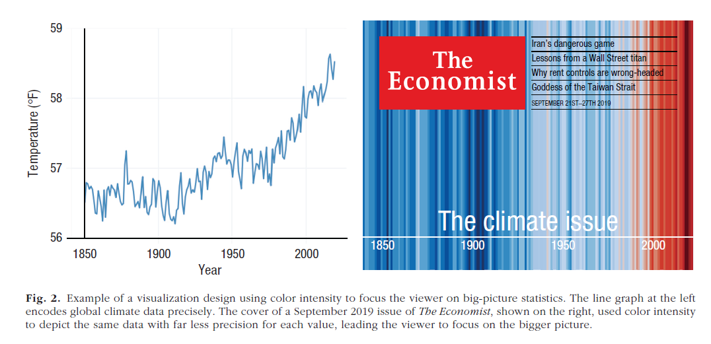
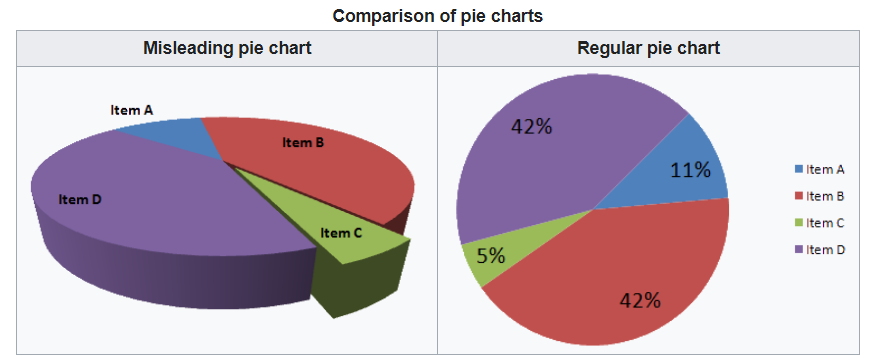

Assessing Nonlinearities & Model Specification Using Predictions
Before you fit a model, it is important to examine the functional form of the relationship between your predictor and your outcome (don’t assume linearity!)
Above, we covered some bivariate methods (consider only x and y)
However, most of our models include multiple predictors / control variables
Ordinal predictors can be specified as continuous or nominal, with tradeoffs

Treating continuous predictors as nominal
An elegantly simple but remarkably flexible way to examine the functional form of a continuous or ordinal IV is to treat it as a nominal variable in your regression model
E.g., For a count variable of # of chronic diseases (0 to 8) omit 0 as reference category; add coefficients for 1, 2, 3, 4…8 diseases
For IVs with lots of values, you can “coarsen” or “bin” them first
E.g., Create age categories of 20 – 30, 31 – 40, 41 – 50, etc.
codebook role masterySS age income race exercisSS, c
Variable Obs Unique Mean Min Max Label
--------------------------------------------------------------------------------
role 5013 11 5.778177 0 10 Role Count - Total
masterySS 5106 566 -.0013007 -4.106874 1.343777 Mastery Scale
age 5114 10 28.42257 24 33 Age
income 4989 354 32.59629 0 150 Personal Income
race 5109 4 1.350949 1 4 Race of R
exercisSS 5109 37 6.105696 0 40 Exercise Activity Sca...
--------------------------------------------------------------------------------
// 10.g - Number of social roles entered as nominalquireg masterySS i.role c.age c.income i.race c.exercisSS*Save predictions for later usemargins, at(role=(0(1)10)) saving(prs_nom, replace)
marginsplot, ///title("[10.g] Predicted mastery levels based on # of social roles held") ///ytitle("Mastery") xtitle("Number of Social Roles")
Variables that uniquely identify margins: role

library(foreign) # load Stata datasetslibrary(ggplot2) # main graphics packagelibrary(dplyr) # data manipulation toolslibrary(marginaleffects) # predictions and marginal effectslibrary(cleanplots) # Mize's graphics scheme## Use cleanplots colors, markers, lines, and theme for all graphs ##cleanplots_defaults()theme_update(plot.title.position ="plot") # titles start at left edge of graph# Add Health Wave 4 Data (social roles ex)cda_ah4 <-droplevels(read.dta("https://tdmize.github.io/data/data/cda_ah4.dta"))# 10.g - Number of social roles entered as nominal (factor)reg_roles_nom <-lm(masterySS ~factor(role) + age + income + race + exercisSS,data = cda_ah4)plot_predictions(reg_roles_nom, condition ="role") +labs(x ="Number of Social Roles", y ="Mastery",title ="[10.g] Predicted mastery levels based on # of social roles held")

Comparing nominal and continuous specifications
The nominal approach is mostly meant as descriptive
It took 10 coefficient estimates for the predictions above
Compare nominal specification to a nonlinear continuous specification
E.g., Polynomials like roles and roles2
Overlay predictions from the two specifications
Stata: combomarginsplot; R: ggplot (see code files)
combomarginsplot prs_nom prs_sq, /// labels("Categorical Model""Roles^2 Model") ///title("[10.h] Comparison of Predictions for Various Functional Forms of Roles") ///ytitle("Mastery") xtitle("Number of Social Roles") ///legend(pos(6) row(1))
Variables that uniquely identify margins: role _filenumber

# 10.h - Compare to roles and roles^2 (quadratic) specificationreg_roles_sq <-lm(masterySS ~poly(role, 2, raw =TRUE) + age + income + race + exercisSS,data = cda_ah4)pred_roles_nom <-plot_predictions(reg_roles_nom, condition ="role", draw =FALSE)pred_roles_nom$role <-as.numeric(as.character(pred_roles_nom$role))plot_predictions(reg_roles_sq, condition ="role") +aes(color ="Roles^2 Model", fill ="Roles^2 Model") +geom_pointrange(data = pred_roles_nom,aes(x = role, y = estimate, ymin = conf.low, ymax = conf.high,color ="Categorical Model"), inherit.aes =FALSE) +labs(x ="Number of Social Roles", y ="Mastery", color =NULL, fill =NULL,title ="[10.h] Comparison of Predictions for Various Functional Forms of Roles") +scale_x_continuous(breaks =0:10) +scale_color_manual(values =unname(cleanplots_colors("red", "ltblue"))) +scale_fill_manual(values =unname(cleanplots_colors("ltblue", bars =TRUE))) +guides(fill ="none")

Specifying ordinal predictors
Independent variables can be entered into a regression model one of two ways:
Continuous or nominal (n.b., binary is nominal but with only 2 categories)
For an ordinal predictor, you must choose (ordinal is not an option)
Continuous is simpler
E.g., For a 5-category ordinal IV only need to estimate 1 coefficient
Nominal is more complicated but always more accurate*
If entering as nominal, need 4 coefficients (representing 4 categories and one omitted reference category)
4 coefficients will always provide a somewhat better fit* than 1
Which should you choose? Try both:
If inferences are very similar, choose the simpler specification (continuous)
If inferences diverge, choose the more complicated but more accurate specification (nominal)
*You can get a significance test of this. But R2 will always be the same or higher in nominal specification (even if not significantly different). An information criterion like AIC or BIC is more helpful
Importance of religion |
to R | Freq. Percent Cum.
------------------------+-----------------------------------
1. Extremely important | 1,835 26.76 26.76
2. Very important | 1,310 19.10 45.87
3. Moderately important | 1,326 19.34 65.20
4. A little important | 904 13.18 78.39
5. Not important at all | 1,482 21.61 100.00
------------------------+-----------------------------------
Total | 6,857 100.00
// 10.i - Importance of religion entered as nominalquilogit vote_trump i.educ i.relimport age hhincome i.woman /// i.lgb i.race4 i.wrongtrackeststore nom_relmargins, at(relimport=(1(1)5)) saving(pr_rel_nom, replace)
combomarginsplot pr_rel_nom pr_rel_con, /// labels("Nominal spec.""Continuous spec.") ytitle("Pr(support Trump)") /// xlab(1 "E. Important" 2 "V. Important" 3 "Mod. Important"/// 4 "Little Important" 5 "Not Important") graphregion(margin(r+5)) ///xtitle("Importance of religion") ///title("[10.j] Pr(support Trump) by importance of religion - comparing IV specifications")
Variables that uniquely identify margins: relimport _filenumber

# 10.j - Compare to importance of religion entered as continuous (numeric)anes_mod$relimportC <-as.numeric(anes_mod$relimport)logit_rel_con <-glm(vote_trump ~ educ + relimportC + age + hhincome + woman + lgb + race4 + wrongtrack,family = binomial, data = anes_mod)pred_rel_nom <-plot_predictions(logit_rel_nom, condition ="relimport", draw =FALSE)plot_predictions(logit_rel_con, condition ="relimportC") +geom_pointrange(data = pred_rel_nom,aes(x =as.numeric(relimport), y = estimate,ymin = conf.low, ymax = conf.high),color =cleanplots_colors("red"), inherit.aes =FALSE) +scale_x_continuous(breaks =1:5, expand =expansion(mult = .08),labels =c("E. Important", "V. Important", "Mod. Important","Little Important", "Not Important")) +labs(x ="Importance of religion", y ="Pr(support Trump)",title ="[10.j] Pr(support Trump) by importance of religion - comparing IV specifications",subtitle ="Continuous specification (line) vs nominal specification (red dots)")

Choosing confidence intervals or standard errors
In my opinion, plots designed to show group differences (e.g., bar charts) are sometimes more effective with standard error bars than confidence intervals
Standard errors are intuitive
Regression tables are normative and most often include standard errors as measures of uncertainty
Standard errors = 68% confidence intervals
68% confidence intervals = ± 1 SE
95% confidence intervals = ± 1.96 SEs
Confidence intervals are normative for line charts and coefficients plots
Unless the measures of uncertainty (CI or SE) greatly hinder the interpretability of the plot, it is always best to include these on plots of sample data (i.e., data that does not include the entire population)
Be clear in your graph and/or text whether CIs or SEs are being plotted
Audiences will assume they are 95% CIs unless you clearly state otherwise
Use logical colors
The colors you choose should not fight against logic or the audience’s inclinations
E.g., When you think of Democrats: what color do you think of? For Republicans? For the Green Party?
But depends on your context and audience!

*From Franconeri 2021. The colors correspond to the values of the temperature; the blue (for colder temps) and red (for hotter temps) are logical choices
Graphics themes in R and color palettes
Graphics themes (ggplot2’s term) are sets of defaults for graphics
These can dramatically change the “look and feel” of a graph
scale_color_cleanplots() — Applies the cleanplots colors to a plot’s color aesthetic; the theme and everything else are left unchanged
scale_fill_cleanplots(palette = “bars”) — Applies the softer cleanplots colors to a plot’s fill aesthetic, designed for ink-heavy elements like bars, boxplots, and areas
scale_shape_cleanplots() — Applies the cleanplots marker symbols: hollow shapes for the dark colors, solid shapes for the light colors, so groups are distinguishable even without color.
scale_linetype_cleanplots() — Applies the cleanplots line patterns (solid, solid, dashed, dashed, shortdash, shortdash, longdash, longdash), keeping line graphs readable in black & white and for colorblind readers.
theme_cleanplots() — Applies the cleanplots look to a single plot: white background, dotted gridlines, gray axis lines, frameless legend at the right, and outlined facet strips.
cleanplots_defaults() — One call applies the full cleanplots setup for the session: theme, automatic colors (main palette for color, soft bar palette for fill), larger markers, thicker lines, and customized fit lines.
cleanplots_save() — Saves a figure at a fixed, publication-ready size (7 × 5 inches, 300 dpi) so plots look the same regardless of your plot window. Format follows the file extension (.png, .pdf, .tiff, …).
Stata graphics and the cleanplots graphics schemes
cleanplots implements a host of features that draw on best data visualization practices (some of which are borrowed from the excellent black and white graphics scheme plainplots from Bischof (2017); these are also repeated in the excellent white_tableau by Naqvi). This allows you to make publication quality Stata graphics with very little effort. With cleanplots, many of the defaults you would change before via code are already changed for you
For example:
Default colors are easier to distinguish from each other and are more aesthetically pleasing
Default colors allow graphs to be printed in color or black and white
Marker shapes and line features (e.g. solid, dashed, etc.) better distinguish lines and ensure lines will be distinguishable if printing in black and white
All axis markers are horizontal – thus easier to read
A non-invasive light grid is on all plots
Both vertical and horizontal gridlines
The background of the plot is white
Legends are placed to right of the graph
And many more!
Presenting multiple model results
Coefficient plots are very effective when the goal is to compare effects across models and/or groups
E.g., If multiple models are fit for different groups, useful to plot coefficients from each model for easy comparison of effects
Confidence intervals are very important here
Incorporating distributional information
Distributional information about an IV can be incorporated into plots of predictions via overlaid histograms, kernel density plots, or rug plots
Especially useful when a distribution deviates notably from uniform or normal
3D-graphics usually make it more difficult to read graphs rather than easier
It is very difficult to read the information encoded on the third (z) axis
Adding a third axis makes it more difficult to read the first two (x and y) axes!
Without the ability to manipulate a 3D graphic—the choice of orientation greatly affects the perception of the plot (e.g. the length of lines)
For all of these reasons, I recommend avoiding 3D-graphics
Exceptions: 3-D graphics can sometimes be useful pedagogically (when you have ample time to explain them)
Can also work with “interactive” graphics where the user can spin the graph to look at it from multiple angles
3D graphs can be misleading

Here, the 3-D nature of the graph is not only unnecessary—it also leads to a misleading graph where pie slices in the foreground look larger than those in the back